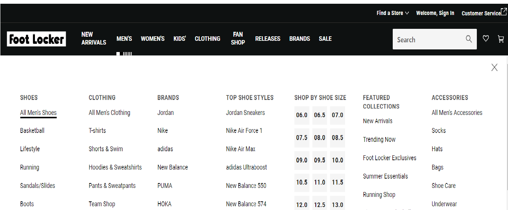

Webritique | Solution
Solution
- I would minimize the options that are displayed at the bottom of the website
- I would also add a sticky header to go with you as you scroll and browse.
- I could also make the navigation at the top of the website to be less confusing and more fluent, for example when you click on “men’s” it takes you a page into a separate tab that gives you another page with images of the shoes and etc.
New Arrivals


 Back To The Top
Back To The Top